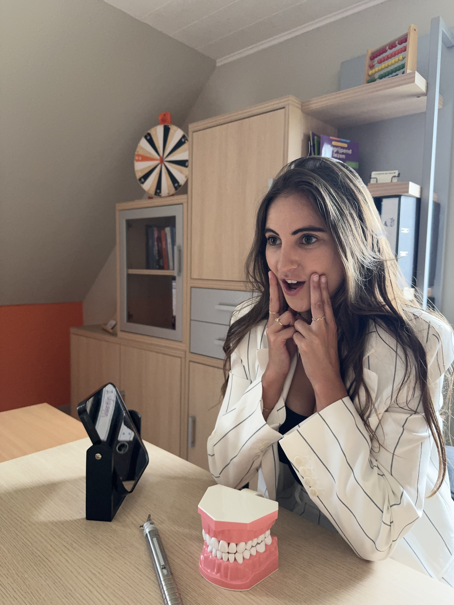

Laurien De Pauw
Laat ik mijzelf even voorstellen! In 2018 studeerde ik met onderscheiding af als logopediste aan de Artevelde Hogeschool waar ik tevens ook een buitenlandse stage volbracht. Door mijn leergierigheid en interesse in gezondheid besloot ik mijn studies verder te zetten met een master Gezondheidsbevordering aan de UGent, waar ik in 2020 afstudeerde met grote onderscheiding. In 2021 begon ik als logopediste in een groepspraktijk waar ik gedurende vijf jaar met veel plezier kleuters en lagereschoolkinderen behandelde met afwijkende mondgewoonten, leer-, taal- en articulatieproblemen.
Met een rugzak vol ervaring en enthousiasme besloot ik in 2025 mijn eigen praktijk op te starten. Ondertussen blijf ik mij bijscholen om steeds de best mogelijke zorg te kunnen verlenen. Wanneer ik niet aan het werk ben, kun je mij vaak al zwetend op de baan in een loop- of fietstenue tegen het lijf lopen. Ook op een zomers terrasje zou je mij wel eens kunnen spotten. Exact in deze volgorde. Tot rust komen doe ik dan weer achter mijn piano of met een goed boek in mijn handen. Ten slotte houd ik ervan om mijn trekrugzak in te pakken, op avontuur te gaan en nieuwe landen en culturen te ontdekken. Deze zin voor avontuur hoop ik dan ook steeds met mijn cliënten te kunnen delen: hun rugzak helpen dragen waar nodig, samen bergen beklimmen om vervolgens te kunnen genieten van het uitzicht. Dat is mijn doel.